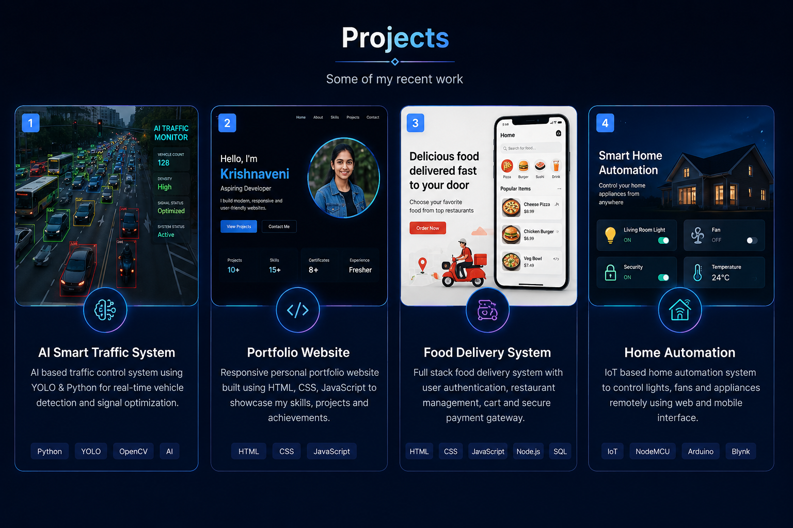
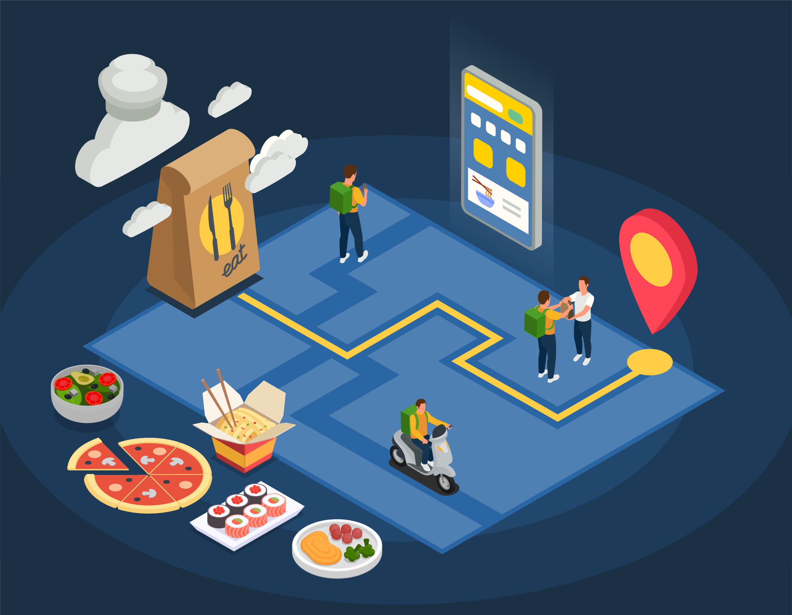
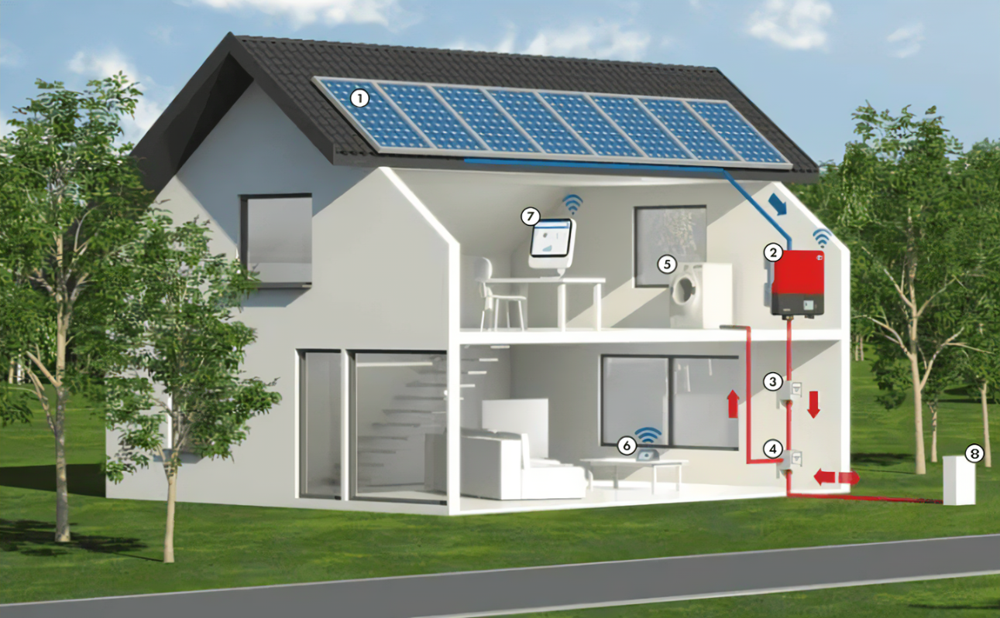

Bachelor of Engineering – Computer Science
Apollo Engineering College
2022 – 2026 | CGPA: 8.0
Computer Science Engineering Student | AI Enthusiast | Cloud & DevOps Learner
I am Wasim Akram Sheriff N, a passionate Computer Science Engineering student with strong interest in software development, artificial intelligence, cloud computing, and DevOps practices. I enjoy building real-world applications that solve practical problems and improve efficiency. I have hands-on experience in front-end development using HTML, CSS, and JavaScript, along with exposure to backend concepts, databases, and cloud technologies. I am also trained in AWS and DevOps tools, with knowledge of cloud infrastructure, CI/CD pipelines, containerization, and deployment workflows. My final year project is an AI-based Smart Traffic Management System developed using Python, OpenCV, and YOLO object detection. The system analyzes real-time traffic density using computer vision and dynamically adjusts traffic signals to reduce congestion and improve road efficiency. This project helped me gain strong experience in AI, computer vision, and real-time system design. I am a quick learner, highly adaptable, and always eager to explore new technologies. My goal is to grow as a software engineer by continuously improving my skills and contributing to impactful projects in the tech industry.
Completed AWS certification
Completed internship using Python & NLP
Developed multiple real-world projects
AI Smart Traffic Management System
Apollo Engineering College
2022 – 2026 | CGPA: 8.0
Chennai | September 2025

Developed an AI-based intelligent traffic control system using Python, OpenCV, and YOLO object detection. The system detects vehicles in real-time, analyzes traffic density, and dynamically adjusts signal timing to reduce congestion and improve traffic flow efficiency.

Designed and developed a fully responsive personal portfolio website using HTML, CSS, and JavaScript. The site showcases projects, skills, certifications, and contact information with modern UI, animations, and interactive elements.

Built a web-based food ordering platform with user-friendly interface for browsing menus, adding items to cart, and placing orders. Implemented frontend logic using HTML, CSS, and JavaScript with basic admin-style structure for order management.

Developed a smart home automation concept system to control and monitor electrical appliances efficiently. Focused on IoT-based automation ideas for energy saving and remote device control using embedded system concepts.
{kind=link}